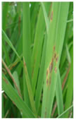
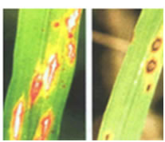
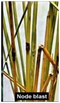
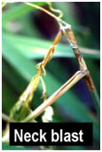
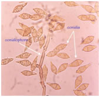
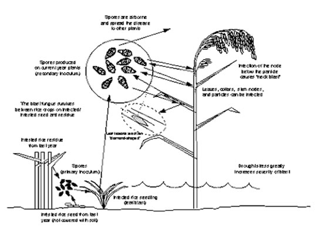

RICE :: FUNGAL DISEASES :: BLAST
Blast - Pyricularia oryzae (Syn: P. grisea) (Sexual stage: Magnaporthe grisea)
Symptoms
The fungus attacks the crop at all stages of crop growth. Symptoms appear on leaves, nodes, rachis, and glumes. On the leaves, the lesions appear as small bluish green flecks, which enlarge under moist weather to form the characteristic spindle shaped spots with grey centre and dark brown margin (Leaf blast).
{kind=link}
Blast Video
The spots coalesce as the disease progresses and large areas of the leaves dry up and wither. Spots also appear on sheath. Severely infected nursery and field appear as burnt. Black lesions appear on nodes girdling them. The affected nodes may break up and all the plant parts above the infected nodes may die (nodal blast).
During flower emergence, the fungus attacks the peduncle and the lesion turns to brownish-black which is referred to as rotten neck / neck rot / panicle blast (neck blast).
In early neck infection, grain filling does not occur while in late infection, partial grain filling occurs. Small brown to black spots may also be observed on glumes of the heavily infected panicles. The pathogen causes yield losses ranging from 30-61 per cent depending upon the stages of infection.
|  |  |  |  |
Leaf blast |
Node blase |
Neck blast |
|
Pathogen
The mycelium is hyaline to olivaceous and septate. Conidia are produced in clusters on long septate, olivaceous conidiophores. Conidia are pyriform to ellipsoid, attached at the broader base by a hilum. Conidia are hyaline to pale olive green, usually 3 celled. The perfect state of the fungus is M. griseaproducing perithecia. The ascospores are hyaline, fusiform, 4 celled and slightly curved.
|  |
Favourable Conditions
- Intermittent drizzles, cloudy weather, more of rainy days, longer duration of dew high relative humidity (93-99 per cent).
- Low night temperature (between 15-20˚C or less than 26˚C).
- Aavailability of collateral hosts and excess dose of nitrogen.
Forecast for rice blast can be made on the basis of minimum night temperature range of 20-26˚C in association with a high relative humidity of 90 per cent and above lasting for a period of a week or more during any of the three susceptible phases of crop growth, viz., seedling stage, post transplanting tillering stage and neck emergence stage. In Japan, the first leaf blast forecasting model was developed named as BLAST. Later several other models have also been developed namely, PYRICULARIA, PYRIVIEW, BLASTAM, EPIBLA and PBLAST.
Disease Cycle
The disease spreads primarily through airborne conidia since spores of the fungus present throughout the year. Mycelium and conidia in the infected straw and seeds are major sources of inoculum. Irrigation water may carry the conidia to different fields.The fungus also survives on collateral hosts viz., Panicum repens, Digitaria marginata, Brachiaria mutica, Leersia hexandraand Echinochloa crusgalli.
Spores land on leaves, germinate, penetrate the leaf, and cause a lesion 4 days later; more spores are produced in as little as 6 days. Infections from spores arriving from a distance are termed primary infections.
|  |
Primary infections generally result in a few widely scattered spots on leaves. Spores arising from the primary infections are capable of causing many more infections. This cycling is called secondary spread. Secondary spread is responsible for the severe epidemics of blast in fields and localized areas.
Management
- Grow resistant to moderately resistant varieties CO47, IR 20, ADT36, ADT39, ASD 18 and IR64. Avoid cultivation of highly susceptible varieties viz., IR50 and TKM6 in disease favourable season.
- Remove and destory the weed hosts in the field bunds and channels.
- Treat the seeds with Captan or Thiram or Carbendazim or Tricyclazole at 2 g/kg. or Pseudomonas fluorescens@ 10g/kg of seed. Spray the nursery with carbendazim 500mg/L or tricyclazole 300mg/L.
- Spray the main field with Edifenphos 500 ml or Carbendazim 500 g or Tricyclazole 500 g or Iprobenphos (IBP) 500 ml /ha.